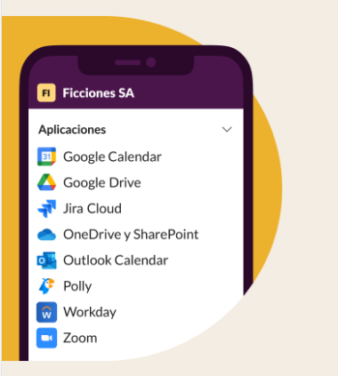

Pensado para las personas. Creado para la productividad.
Conecta con las personas adecuadas, encuentra lo que necesitas y automatiza todo lo demás. Así es como se trabaja en Slack, tu plataforma de productividad.
REGISTRARSE CON GOOGLE
EMPRESAS DE TODO EL MUNDO YA CONFÍAN EN SLACK



Agiliza el trabajo con todas tus herramientas en un mismo lugar
Automatiza las tareas rutinarias con las posibilidades de la IA generativa y simplifica tu flujo de trabajo con tus aplicaciones favoritas listas para usar en Slack.
Más información sobre la plataforma de SlackSelecciona cómo quieres trabajar
Slack te otorga la flexibilidad para trabajar cuando, donde y como tú quieras. Puedes chatear, enviar clips de audio y vídeo o unirte a una junta para discutir asuntos en directo.
Obtén más información acerca de la comunicación flexibleReúne a tu equipo
Los canales son el corazón de Slack. Son espacios organizados para todo el mundo que contienen todo lo necesario para trabajar. Los canales permiten conectarse entre departamentos, oficinas, zonas horarias e incluso con otras empresas.
Obtén más información sobre los canalesEquipos grandes y pequeños confían en Slack
Slack se adapta de forma segura para garantizar la colaboración en las empresas más importantes del mundo.
85%
de usuarios afirman que Slack ha mejorado la comunicación*
86%
creen que su capacidad para trabajar a distancia ha mejorado*
88%
se sienten más conectados con sus equipos*
"Muchos empleados del sector tecnológico estaban realizando una transición natural hacia Slack. Por lo tanto, seguimos los pasos de nuestros usuarios hacia lo que a día de hoy es una de nuestras herramientas más importantes”.
* Promedio ponderado. Basado en una encuesta de 2707 respuestas de usuarios semanales de Slack en Estados Unidos, Reino Unido, Australia y Canadá, con un margen de error de ± 2 % al 95 % CI (diciembre de 2021).